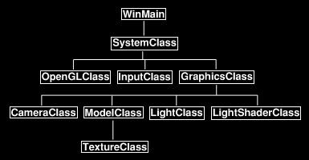
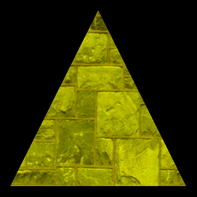

In this tutorial I will cover how to light 3D objects using diffuse lighting and OpenGL 4.0.
We will start with the code from the previous tutorial and modify it.
The type of diffuse lighting we will be implementing is called directional lighting.
Directional lighting is similar to how the Sun illuminates the Earth.
It is a light source that is a great distance away and based on the direction it is sending light you can determine the amount of light on any object.
However unlike ambient lighting (another lighting model we will cover soon) it will not light up surfaces it does not directly touch.
I picked directional lighting to start with because it is very easy to debug visually.
Also since it only requires a direction the formula is simpler than the other types of diffuse lighting such as spot lights and point lights.
The implementation of diffuse lighting in OpenGL 4.0 is done with both vertex and pixel shaders.
Diffuse lighting requires just the direction and a normal vector for any polygons that we want to light.
The direction is a single vector that you define, and you can calculate the normal for any polygon by using the three vertices that compose the polygon.
In this tutorial we will also implement the color of the diffuse light in the lighting equation.
Frame Work
For this tutorial we will create a new class called LightClass which will represent the light sources in the scenes.
LightClass won't actually do anything other than hold the direction and color of the light.
We will also remove the TextureShaderClass and replace it with LightShaderClass which handles the light shading on the model.
With the addition of the new classes the frame work now looks like the following:

We will start the code section by looking at the GLSL light shader.
You will notice that the light shader is just an updated version of the texture shader from the previous tutorial.
I will cover the changes that have been made.
Light.vs
////////////////////////////////////////////////////////////////////////////////
// Filename: light.vs
////////////////////////////////////////////////////////////////////////////////
#version 400
There is a new input and output variable which is a 3 float normal vector.
The normal vector is used for calculating the amount of light by using the angle between the direction of the normal and the direction of the light.
/////////////////////
// INPUT VARIABLES //
/////////////////////
in vec3 inputPosition;
in vec2 inputTexCoord;
in vec3 inputNormal;
//////////////////////
// OUTPUT VARIABLES //
//////////////////////
out vec2 texCoord;
out vec3 normal;
///////////////////////
// UNIFORM VARIABLES //
///////////////////////
uniform mat4 worldMatrix;
uniform mat4 viewMatrix;
uniform mat4 projectionMatrix;
////////////////////////////////////////////////////////////////////////////////
// Vertex Shader
////////////////////////////////////////////////////////////////////////////////
void main(void)
{
// Calculate the position of the vertex against the world, view, and projection matrices.
gl_Position = worldMatrix * vec4(inputPosition, 1.0f);
gl_Position = viewMatrix * gl_Position;
gl_Position = projectionMatrix * gl_Position;
// Store the texture coordinates for the pixel shader.
texCoord = inputTexCoord;
The normal vector for this vertex is calculated in world space and then normalized before being sent as input into the pixel shader.
Note that sometimes these need to be re-normalized inside the pixel shader due to the interpolation that occurs.
// Calculate the normal vector against the world matrix only.
normal = mat3(worldMatrix) * inputNormal;
// Normalize the normal vector.
normal = normalize(normal);
}
Light.ps
////////////////////////////////////////////////////////////////////////////////
// Filename: light.ps
////////////////////////////////////////////////////////////////////////////////
#version 400
The input normal vector variable is added here in the pixel shader.
/////////////////////
// INPUT VARIABLES //
/////////////////////
in vec2 texCoord;
in vec3 normal;
//////////////////////
// OUTPUT VARIABLES //
//////////////////////
out vec4 outputColor;
We have two new uniform variables.
These variables are used for sending as input the diffuse color and direction of the light.
These two variables will be set from values in the new LightClass object that are then sent in through the LightShaderClass.
///////////////////////
// UNIFORM VARIABLES //
///////////////////////
uniform sampler2D shaderTexture;
uniform vec3 lightDirection;
uniform vec4 diffuseLightColor;
////////////////////////////////////////////////////////////////////////////////
// Pixel Shader
////////////////////////////////////////////////////////////////////////////////
void main(void)
{
vec4 textureColor;
vec3 lightDir;
float lightIntensity;
// Sample the pixel color from the texture using the sampler at this texture coordinate location.
textureColor = texture(shaderTexture, texCoord);
This is where the lighting equation that was discussed earlier is now implemented.
The light intensity value is calculated as the dot product between the normal vector of triangle and the light direction vector.
The clamp function is surrounding the equation is used to keep it in the 0.0f to 1.0f range.
We also combine the diffuse light color after the intensity has been calculated by multiplying the two values together and once again clamping them into the 0.0f to 1.0f range.
// Invert the light direction for calculations.
lightDir = -lightDirection;
// Calculate the amount of light on this pixel.
lightIntensity = clamp(dot(normal, lightDir), 0.0f, 1.0f);
// Determine the final amount of diffuse color based on the diffuse color combined with the light intensity.
outputColor = clamp((diffuseLightColor * lightIntensity), 0.0f, 1.0f);
And finally the diffuse value of the light is combined with the texture pixel value to produce the color result.
// Multiply the texture pixel and the final diffuse color to get the final pixel color result.
outputColor = outputColor * textureColor;
}
Lightshaderclass.h
The new LightShaderClass is just the TextureShaderClass from the previous tutorials re-written slightly to incorporate lighting.
////////////////////////////////////////////////////////////////////////////////
// Filename: lightshaderclass.h
////////////////////////////////////////////////////////////////////////////////
#ifndef _LIGHTSHADERCLASS_H_
#define _LIGHTSHADERCLASS_H_
//////////////
// INCLUDES //
//////////////
#include <fstream>
using namespace std;
///////////////////////
// MY CLASS INCLUDES //
///////////////////////
#include "openglclass.h"
////////////////////////////////////////////////////////////////////////////////
// Class name: LightShaderClass
////////////////////////////////////////////////////////////////////////////////
class LightShaderClass
{
public:
LightShaderClass();
LightShaderClass(const LightShaderClass&);
~LightShaderClass();
bool Initialize(OpenGLClass*, HWND);
void Shutdown(OpenGLClass*);
void SetShader(OpenGLClass*);
bool SetShaderParameters(OpenGLClass*, float*, float*, float*, int, float*, float*);
private:
bool InitializeShader(char*, char*, OpenGLClass*, HWND);
char* LoadShaderSourceFile(char*);
void OutputShaderErrorMessage(OpenGLClass*, HWND, unsigned int, char*);
void OutputLinkerErrorMessage(OpenGLClass*, HWND, unsigned int);
void ShutdownShader(OpenGLClass*);
private:
unsigned int m_vertexShader;
unsigned int m_fragmentShader;
unsigned int m_shaderProgram;
};
#endif
Lightshaderclass.cpp
////////////////////////////////////////////////////////////////////////////////
// Filename: lightshaderclass.cpp
////////////////////////////////////////////////////////////////////////////////
#include "lightshaderclass.h"
LightShaderClass::LightShaderClass()
{
}
LightShaderClass::LightShaderClass(const LightShaderClass& other)
{
}
LightShaderClass::~LightShaderClass()
{
}
bool LightShaderClass::Initialize(OpenGLClass* OpenGL, HWND hwnd)
{
bool result;
The new light.vs and light.ps GLSL shader files are used as input to initialize the light shader.
// Initialize the vertex and pixel shaders.
result = InitializeShader("../Engine/light.vs", "../Engine/light.ps", OpenGL, hwnd);
if(!result)
{
return false;
}
return true;
}
void LightShaderClass::Shutdown(OpenGLClass* OpenGL)
{
// Shutdown the vertex and pixel shaders as well as the related objects.
ShutdownShader(OpenGL);
return;
}
void LightShaderClass::SetShader(OpenGLClass* OpenGL)
{
// Install the shader program as part of the current rendering state.
OpenGL->glUseProgram(m_shaderProgram);
return;
}
bool LightShaderClass::InitializeShader(char* vsFilename, char* fsFilename, OpenGLClass* OpenGL, HWND hwnd)
{
const char* vertexShaderBuffer;
const char* fragmentShaderBuffer;
int status;
// Load the vertex shader source file into a text buffer.
vertexShaderBuffer = LoadShaderSourceFile(vsFilename);
if(!vertexShaderBuffer)
{
return false;
}
// Load the fragment shader source file into a text buffer.
fragmentShaderBuffer = LoadShaderSourceFile(fsFilename);
if(!fragmentShaderBuffer)
{
return false;
}
// Create a vertex and fragment shader object.
m_vertexShader = OpenGL->glCreateShader(GL_VERTEX_SHADER);
m_fragmentShader = OpenGL->glCreateShader(GL_FRAGMENT_SHADER);
// Copy the shader source code strings into the vertex and fragment shader objects.
OpenGL->glShaderSource(m_vertexShader, 1, &vertexShaderBuffer, NULL);
OpenGL->glShaderSource(m_fragmentShader, 1, &fragmentShaderBuffer, NULL);
// Release the vertex and fragment shader buffers.
delete [] vertexShaderBuffer;
vertexShaderBuffer = 0;
delete [] fragmentShaderBuffer;
fragmentShaderBuffer = 0;
// Compile the shaders.
OpenGL->glCompileShader(m_vertexShader);
OpenGL->glCompileShader(m_fragmentShader);
// Check to see if the vertex shader compiled successfully.
OpenGL->glGetShaderiv(m_vertexShader, GL_COMPILE_STATUS, &status);
if(status != 1)
{
// If it did not compile then write the syntax error message out to a text file for review.
OutputShaderErrorMessage(OpenGL, hwnd, m_vertexShader, vsFilename);
return false;
}
// Check to see if the fragment shader compiled successfully.
OpenGL->glGetShaderiv(m_fragmentShader, GL_COMPILE_STATUS, &status);
if(status != 1)
{
// If it did not compile then write the syntax error message out to a text file for review.
OutputShaderErrorMessage(OpenGL, hwnd, m_fragmentShader, fsFilename);
return false;
}
// Create a shader program object.
m_shaderProgram = OpenGL->glCreateProgram();
// Attach the vertex and fragment shader to the program object.
OpenGL->glAttachShader(m_shaderProgram, m_vertexShader);
OpenGL->glAttachShader(m_shaderProgram, m_fragmentShader);
We now add a third attribute for the normal vector that will be used for lighting in the GLSL light vertex shader.
// Bind the shader input variables.
OpenGL->glBindAttribLocation(m_shaderProgram, 0, "inputPosition");
OpenGL->glBindAttribLocation(m_shaderProgram, 1, "inputTexCoord");
OpenGL->glBindAttribLocation(m_shaderProgram, 2, "inputNormal");
// Link the shader program.
OpenGL->glLinkProgram(m_shaderProgram);
// Check the status of the link.
OpenGL->glGetProgramiv(m_shaderProgram, GL_LINK_STATUS, &status);
if(status != 1)
{
// If it did not link then write the syntax error message out to a text file for review.
OutputLinkerErrorMessage(OpenGL, hwnd, m_shaderProgram);
return false;
}
return true;
}
char* LightShaderClass::LoadShaderSourceFile(char* filename)
{
ifstream fin;
int fileSize;
char input;
char* buffer;
// Open the shader source file.
fin.open(filename);
// If it could not open the file then exit.
if(fin.fail())
{
return 0;
}
// Initialize the size of the file.
fileSize = 0;
// Read the first element of the file.
fin.get(input);
// Count the number of elements in the text file.
while(!fin.eof())
{
fileSize++;
fin.get(input);
}
// Close the file for now.
fin.close();
// Initialize the buffer to read the shader source file into.
buffer = new char[fileSize+1];
if(!buffer)
{
return 0;
}
// Open the shader source file again.
fin.open(filename);
// Read the shader text file into the buffer as a block.
fin.read(buffer, fileSize);
// Close the file.
fin.close();
// Null terminate the buffer.
buffer[fileSize] = '\0';
return buffer;
}
void LightShaderClass::OutputShaderErrorMessage(OpenGLClass* OpenGL, HWND hwnd, unsigned int shaderId, char* shaderFilename)
{
int logSize, i;
char* infoLog;
ofstream fout;
wchar_t newString[128];
unsigned int error, convertedChars;
// Get the size of the string containing the information log for the failed shader compilation message.
OpenGL->glGetShaderiv(shaderId, GL_INFO_LOG_LENGTH, &logSize);
// Increment the size by one to handle also the null terminator.
logSize++;
// Create a char buffer to hold the info log.
infoLog = new char[logSize];
if(!infoLog)
{
return;
}
// Now retrieve the info log.
OpenGL->glGetShaderInfoLog(shaderId, logSize, NULL, infoLog);
// Open a file to write the error message to.
fout.open("shader-error.txt");
// Write out the error message.
for(i=0; i<logSize; i++)
{
fout << infoLog[i];
}
// Close the file.
fout.close();
// Convert the shader filename to a wide character string.
error = mbstowcs_s(&convertedChars, newString, 128, shaderFilename, 128);
if(error != 0)
{
return;
}
// Pop a message up on the screen to notify the user to check the text file for compile errors.
MessageBox(hwnd, L"Error compiling shader. Check shader-error.txt for message.", newString, MB_OK);
return;
}
void LightShaderClass::OutputLinkerErrorMessage(OpenGLClass* OpenGL, HWND hwnd, unsigned int programId)
{
int logSize, i;
char* infoLog;
ofstream fout;
// Get the size of the string containing the information log for the failed shader compilation message.
OpenGL->glGetProgramiv(programId, GL_INFO_LOG_LENGTH, &logSize);
// Increment the size by one to handle also the null terminator.
logSize++;
// Create a char buffer to hold the info log.
infoLog = new char[logSize];
if(!infoLog)
{
return;
}
// Now retrieve the info log.
OpenGL->glGetProgramInfoLog(programId, logSize, NULL, infoLog);
// Open a file to write the error message to.
fout.open("linker-error.txt");
// Write out the error message.
for(i=0; i<logSize; i++)
{
fout << infoLog[i];
}
// Close the file.
fout.close();
// Pop a message up on the screen to notify the user to check the text file for linker errors.
MessageBox(hwnd, L"Error compiling linker. Check linker-error.txt for message.", L"Linker Error", MB_OK);
return;
}
void LightShaderClass::ShutdownShader(OpenGLClass* OpenGL)
{
// Detach the vertex and fragment shaders from the program.
OpenGL->glDetachShader(m_shaderProgram, m_vertexShader);
OpenGL->glDetachShader(m_shaderProgram, m_fragmentShader);
// Delete the vertex and fragment shaders.
OpenGL->glDeleteShader(m_vertexShader);
OpenGL->glDeleteShader(m_fragmentShader);
// Delete the shader program.
OpenGL->glDeleteProgram(m_shaderProgram);
return;
}
The SetShaderParameters function now takes in lightDirection and diffuseLightColor as inputs.
bool LightShaderClass::SetShaderParameters(OpenGLClass* OpenGL, float* worldMatrix, float* viewMatrix, float* projectionMatrix, int textureUnit,
float* lightDirection, float* diffuseLightColor)
{
unsigned int location;
// Set the world matrix in the vertex shader.
location = OpenGL->glGetUniformLocation(m_shaderProgram, "worldMatrix");
if(location == -1)
{
return false;
}
OpenGL->glUniformMatrix4fv(location, 1, false, worldMatrix);
// Set the view matrix in the vertex shader.
location = OpenGL->glGetUniformLocation(m_shaderProgram, "viewMatrix");
if(location == -1)
{
return false;
}
OpenGL->glUniformMatrix4fv(location, 1, false, viewMatrix);
// Set the projection matrix in the vertex shader.
location = OpenGL->glGetUniformLocation(m_shaderProgram, "projectionMatrix");
if(location == -1)
{
return false;
}
OpenGL->glUniformMatrix4fv(location, 1, false, projectionMatrix);
// Set the texture in the pixel shader to use the data from the first texture unit.
location = OpenGL->glGetUniformLocation(m_shaderProgram, "shaderTexture");
if(location == -1)
{
return false;
}
OpenGL->glUniform1i(location, textureUnit);
The light direction and diffuse light color are set here in the pixel shader.
Note that lightDirection is a 3 float vector so we use glUniform3fv to set it.
And diffuseLightColor is a 4 float array so we use glUniform4fv to set it.
// Set the light direction in the pixel shader.
location = OpenGL->glGetUniformLocation(m_shaderProgram, "lightDirection");
if(location == -1)
{
return false;
}
OpenGL->glUniform3fv(location, 1, lightDirection);
// Set the light direction in the pixel shader.
location = OpenGL->glGetUniformLocation(m_shaderProgram, "diffuseLightColor");
if(location == -1)
{
return false;
}
OpenGL->glUniform4fv(location, 1, diffuseLightColor);
return true;
}
Modelclass.h
The ModelClass has been slightly modified to handle lighting components.
////////////////////////////////////////////////////////////////////////////////
// Filename: modelclass.h
////////////////////////////////////////////////////////////////////////////////
#ifndef _MODELCLASS_H_
#define _MODELCLASS_H_
///////////////////////
// MY CLASS INCLUDES //
///////////////////////
#include "textureclass.h"
////////////////////////////////////////////////////////////////////////////////
// Class name: ModelClass
////////////////////////////////////////////////////////////////////////////////
class ModelClass
{
private:
The VertexType structure now has a normal vector to accommodate lighting.
struct VertexType
{
float x, y, z;
float tu, tv;
float nx, ny, nz;
};
public:
ModelClass();
ModelClass(const ModelClass&);
~ModelClass();
bool Initialize(OpenGLClass*, char*, unsigned int, bool);
void Shutdown(OpenGLClass*);
void Render(OpenGLClass*);
private:
bool InitializeBuffers(OpenGLClass*);
void ShutdownBuffers(OpenGLClass*);
void RenderBuffers(OpenGLClass*);
bool LoadTexture(OpenGLClass*, char*, unsigned int, bool);
void ReleaseTexture();
private:
int m_vertexCount, m_indexCount;
unsigned int m_vertexArrayId, m_vertexBufferId, m_indexBufferId;
TextureClass* m_Texture;
};
#endif
Modelclass.cpp
////////////////////////////////////////////////////////////////////////////////
// Filename: modelclass.cpp
////////////////////////////////////////////////////////////////////////////////
#include "modelclass.h"
ModelClass::ModelClass()
{
m_Texture = 0;
}
ModelClass::ModelClass(const ModelClass& other)
{
}
ModelClass::~ModelClass()
{
}
bool ModelClass::Initialize(OpenGLClass* OpenGL, char* textureFilename, unsigned int textureUnit, bool wrap)
{
bool result;
// Initialize the vertex and index buffer that hold the geometry for the triangle.
result = InitializeBuffers(OpenGL);
if(!result)
{
return false;
}
// Load the texture for this model.
result = LoadTexture(OpenGL, textureFilename, textureUnit, wrap);
if(!result)
{
return false;
}
return true;
}
void ModelClass::Shutdown(OpenGLClass* OpenGL)
{
// Release the texture used for this model.
ReleaseTexture();
// Release the vertex and index buffers.
ShutdownBuffers(OpenGL);
return;
}
void ModelClass::Render(OpenGLClass* OpenGL)
{
// Put the vertex and index buffers on the graphics pipeline to prepare them for drawing.
RenderBuffers(OpenGL);
return;
}
bool ModelClass::InitializeBuffers(OpenGLClass* OpenGL)
{
VertexType* vertices;
unsigned int* indices;
// Set the number of vertices in the vertex array.
m_vertexCount = 3;
// Set the number of indices in the index array.
m_indexCount = 3;
// Create the vertex array.
vertices = new VertexType[m_vertexCount];
if(!vertices)
{
return false;
}
// Create the index array.
indices = new unsigned int[m_indexCount];
if(!indices)
{
return false;
}
The primary change to the InitializeBuffers function is here in the vertex setup.
Each vertex now has normals associated with it for lighting calculations.
The normal is a line that is perpendicular to the face of the polygon so that the exact direction the face is pointing can be calculated.
For simplicity purposes I set the normal for each vertex along the Z axis by setting each Z component to -1.0f which makes the normal point towards the viewer.
// Load the vertex array with data.
// Bottom left.
vertices[0].x = -1.0f; // Position.
vertices[0].y = -1.0f;
vertices[0].z = 0.0f;
vertices[0].tu = 0.0f; // Texture coordinates.
vertices[0].tv = 0.0f;
vertices[0].nx = 0.0f; // Normals.
vertices[0].ny = 0.0f;
vertices[0].nz = -1.0f;
// Top middle.
vertices[1].x = 0.0f; // Position.
vertices[1].y = 1.0f;
vertices[1].z = 0.0f;
vertices[1].tu = 0.5f; // Texture coordinates.
vertices[1].tv = 1.0f;
vertices[1].nx = 0.0f; // Normals.
vertices[1].ny = 0.0f;
vertices[1].nz = -1.0f;
// Bottom right.
vertices[2].x = 1.0f; // Position.
vertices[2].y = -1.0f;
vertices[2].z = 0.0f;
vertices[2].tu = 1.0f; // Texture coordinates.
vertices[2].tv = 0.0f;
vertices[2].nx = 0.0f; // Normals.
vertices[2].ny = 0.0f;
vertices[2].nz = -1.0f;
// Load the index array with data.
indices[0] = 0; // Bottom left.
indices[1] = 1; // Top middle.
indices[2] = 2; // Bottom right.
// Allocate an OpenGL vertex array object.
OpenGL->glGenVertexArrays(1, &m_vertexArrayId);
// Bind the vertex array object to store all the buffers and vertex attributes we create here.
OpenGL->glBindVertexArray(m_vertexArrayId);
// Generate an ID for the vertex buffer.
OpenGL->glGenBuffers(1, &m_vertexBufferId);
// Bind the vertex buffer and load the vertex (position, texture, and normal) data into the vertex buffer.
OpenGL->glBindBuffer(GL_ARRAY_BUFFER, m_vertexBufferId);
OpenGL->glBufferData(GL_ARRAY_BUFFER, m_vertexCount * sizeof(VertexType), vertices, GL_STATIC_DRAW);
The next major change is that we enable the normal vertex attribute array.
// Enable the three vertex array attributes.
OpenGL->glEnableVertexAttribArray(0); // Vertex position.
OpenGL->glEnableVertexAttribArray(1); // Texture coordinates.
OpenGL->glEnableVertexAttribArray(2); // Normals.
// Specify the location and format of the position portion of the vertex buffer.
OpenGL->glBindBuffer(GL_ARRAY_BUFFER, m_vertexBufferId);
OpenGL->glVertexAttribPointer(0, 3, GL_FLOAT, false, sizeof(VertexType), 0);
// Specify the location and format of the texture coordinate portion of the vertex buffer.
OpenGL->glBindBuffer(GL_ARRAY_BUFFER, m_vertexBufferId);
OpenGL->glVertexAttribPointer(1, 2, GL_FLOAT, false, sizeof(VertexType), (unsigned char*)NULL + (3 * sizeof(float)));
We also specify that the position of the normal vector is the 6th, 7th, and 8th float in the buffer.
// Specify the location and format of the normal vector portion of the vertex buffer.
OpenGL->glBindBuffer(GL_ARRAY_BUFFER, m_vertexBufferId);
OpenGL->glVertexAttribPointer(2, 3, GL_FLOAT, false, sizeof(VertexType), (unsigned char*)NULL + (5 * sizeof(float)));
// Generate an ID for the index buffer.
OpenGL->glGenBuffers(1, &m_indexBufferId);
// Bind the index buffer and load the index data into it.
OpenGL->glBindBuffer(GL_ELEMENT_ARRAY_BUFFER, m_indexBufferId);
OpenGL->glBufferData(GL_ELEMENT_ARRAY_BUFFER, m_indexCount* sizeof(unsigned int), indices, GL_STATIC_DRAW);
// Now that the buffers have been loaded we can release the array data.
delete [] vertices;
vertices = 0;
delete [] indices;
indices = 0;
return true;
}
void ModelClass::ShutdownBuffers(OpenGLClass* OpenGL)
{
// Disable the two vertex array attributes.
OpenGL->glDisableVertexAttribArray(0);
OpenGL->glDisableVertexAttribArray(1);
// Release the vertex buffer.
OpenGL->glBindBuffer(GL_ARRAY_BUFFER, 0);
OpenGL->glDeleteBuffers(1, &m_vertexBufferId);
// Release the index buffer.
OpenGL->glBindBuffer(GL_ELEMENT_ARRAY_BUFFER, 0);
OpenGL->glDeleteBuffers(1, &m_indexBufferId);
// Release the vertex array object.
OpenGL->glBindVertexArray(0);
OpenGL->glDeleteVertexArrays(1, &m_vertexArrayId);
return;
}
void ModelClass::RenderBuffers(OpenGLClass* OpenGL)
{
// Bind the vertex array object that stored all the information about the vertex and index buffers.
OpenGL->glBindVertexArray(m_vertexArrayId);
// Render the vertex buffer using the index buffer.
glDrawElements(GL_TRIANGLES, m_indexCount, GL_UNSIGNED_INT, 0);
return;
}
bool ModelClass::LoadTexture(OpenGLClass* OpenGL, char* textureFilename, unsigned int textureUnit, bool wrap)
{
bool result;
// Create the texture object.
m_Texture = new TextureClass;
if(!m_Texture)
{
return false;
}
// Initialize the texture object.
result = m_Texture->Initialize(OpenGL, textureFilename, textureUnit, wrap);
if(!result)
{
return false;
}
return true;
}
void ModelClass::ReleaseTexture()
{
// Release the texture object.
if(m_Texture)
{
m_Texture->Shutdown();
delete m_Texture;
m_Texture = 0;
}
return;
}
Lightclass.h
Now we will look at the new light class which is very simple.
Its purpose is only to maintain the direction and color of lights.
////////////////////////////////////////////////////////////////////////////////
// Filename: lightclass.h
////////////////////////////////////////////////////////////////////////////////
#ifndef _LIGHTCLASS_H_
#define _LIGHTCLASS_H_
////////////////////////////////////////////////////////////////////////////////
// Class name: LightClass
////////////////////////////////////////////////////////////////////////////////
class LightClass
{
public:
LightClass();
LightClass(const LightClass&);
~LightClass();
void SetDiffuseColor(float, float, float, float);
void SetDirection(float, float, float);
void GetDiffuseColor(float*);
void GetDirection(float*);
private:
float m_diffuseColor[4];
float m_direction[3];
};
#endif
Lightclass.cpp
////////////////////////////////////////////////////////////////////////////////
// Filename: lightclass.cpp
////////////////////////////////////////////////////////////////////////////////
#include "lightclass.h"
LightClass::LightClass()
{
}
LightClass::LightClass(const LightClass& other)
{
}
LightClass::~LightClass()
{
}
void LightClass::SetDiffuseColor(float red, float green, float blue, float alpha)
{
m_diffuseColor[0] = red;
m_diffuseColor[1] = green;
m_diffuseColor[2] = blue;
m_diffuseColor[3] = alpha;
return;
}
void LightClass::SetDirection(float x, float y, float z)
{
m_direction[0] = x;
m_direction[1] = y;
m_direction[2] = z;
return;
}
void LightClass::GetDiffuseColor(float* color)
{
color[0] = m_diffuseColor[0];
color[1] = m_diffuseColor[1];
color[2] = m_diffuseColor[2];
color[3] = m_diffuseColor[3];
return;
}
void LightClass::GetDirection(float* direction)
{
direction[0] = m_direction[0];
direction[1] = m_direction[1];
direction[2] = m_direction[2];
return;
}
Graphicsclass.h
////////////////////////////////////////////////////////////////////////////////
// Filename: graphicsclass.h
////////////////////////////////////////////////////////////////////////////////
#ifndef _GRAPHICSCLASS_H_
#define _GRAPHICSCLASS_H_
///////////////////////
// MY CLASS INCLUDES //
///////////////////////
#include "openglclass.h"
#include "cameraclass.h"
#include "modelclass.h"
The GraphicsClass now has two new includes for the LightShaderClass and the LightClass.
#include "lightshaderclass.h"
#include "lightclass.h"
/////////////
// GLOBALS //
/////////////
const bool FULL_SCREEN = true;
const bool VSYNC_ENABLED = true;
const float SCREEN_DEPTH = 1000.0f;
const float SCREEN_NEAR = 0.1f;
////////////////////////////////////////////////////////////////////////////////
// Class name: GraphicsClass
////////////////////////////////////////////////////////////////////////////////
class GraphicsClass
{
public:
GraphicsClass();
GraphicsClass(const GraphicsClass&);
~GraphicsClass();
bool Initialize(OpenGLClass*, HWND);
void Shutdown();
bool Frame();
private:
Render now takes a float value as input.
bool Render(float);
private:
OpenGLClass* m_OpenGL;
CameraClass* m_Camera;
ModelClass* m_Model;
There are two new private variables for the light shader and the light object.
LightShaderClass* m_LightShader;
LightClass* m_Light;
};
#endif
Graphicsclass.cpp
////////////////////////////////////////////////////////////////////////////////
// Filename: graphicsclass.cpp
////////////////////////////////////////////////////////////////////////////////
#include "graphicsclass.h"
GraphicsClass::GraphicsClass()
{
m_OpenGL = 0;
m_Camera = 0;
m_Model = 0;
The light shader and light object are set to null in the class constructor.
m_LightShader = 0;
m_Light = 0;
}
GraphicsClass::GraphicsClass(const GraphicsClass& other)
{
}
GraphicsClass::~GraphicsClass()
{
}
bool GraphicsClass::Initialize(OpenGLClass* OpenGL, HWND hwnd)
{
bool result;
// Store a pointer to the OpenGL class object.
m_OpenGL = OpenGL;
// Create the camera object.
m_Camera = new CameraClass;
if(!m_Camera)
{
return false;
}
// Set the initial position of the camera.
m_Camera->SetPosition(0.0f, 0.0f, -10.0f);
// Create the model object.
m_Model = new ModelClass;
if(!m_Model)
{
return false;
}
We use a better texture as input to the model object so that the effect of the light color is more pronounced.
// Initialize the model object.
result = m_Model->Initialize(m_OpenGL, "../Engine/data/stone.tga", 0, true);
if(!result)
{
MessageBox(hwnd, L"Could not initialize the model object.", L"Error", MB_OK);
return false;
}
The new light shader object is created and initialized here.
// Create the light shader object.
m_LightShader = new LightShaderClass;
if(!m_LightShader)
{
return false;
}
// Initialize the light shader object.
result = m_LightShader->Initialize(m_OpenGL, hwnd);
if(!result)
{
MessageBox(hwnd, L"Could not initialize the light shader object.", L"Error", MB_OK);
return false;
}
The new light object is created and initialized here.
The color of the light is set to yellow and the light direction is set to point down the positive Z axis into the screen.
// Create the light object.
m_Light = new LightClass;
if(!m_Light)
{
return false;
}
// Initialize the light object.
m_Light->SetDiffuseColor(1.0f, 1.0f, 0.0f, 1.0f);
m_Light->SetDirection(0.0f, 0.0f, 1.0f);
return true;
}
void GraphicsClass::Shutdown()
{
The Shutdown function now releases the new light and light shader objects.
// Release the light object.
if(m_Light)
{
delete m_Light;
m_Light = 0;
}
// Release the light shader object.
if(m_LightShader)
{
m_LightShader->Shutdown(m_OpenGL);
delete m_LightShader;
m_LightShader = 0;
}
// Release the model object.
if(m_Model)
{
m_Model->Shutdown(m_OpenGL);
delete m_Model;
m_Model = 0;
}
// Release the camera object.
if(m_Camera)
{
delete m_Camera;
m_Camera = 0;
}
// Release the pointer to the OpenGL class object.
m_OpenGL = 0;
return;
}
bool GraphicsClass::Frame()
{
bool result;
We add a new static variable to hold an updated rotation value each frame that will be passed into the Render function.
static float rotation = 0.0f;
// Update the rotation variable each frame.
rotation += 0.0174532925f * 2.0f;
if(rotation > 360.0f)
{
rotation -= 360.0f;
}
// Render the graphics scene.
result = Render(rotation);
if(!result)
{
return false;
}
return true;
}
bool GraphicsClass::Render(float rotation)
{
float worldMatrix[16];
float viewMatrix[16];
float projectionMatrix[16];
float lightDirection[3];
float diffuseLightColor[4];
// Clear the buffers to begin the scene.
m_OpenGL->BeginScene(0.0f, 0.0f, 0.0f, 1.0f);
// Generate the view matrix based on the camera's position.
m_Camera->Render();
// Get the world, view, and projection matrices from the opengl and camera objects.
m_OpenGL->GetWorldMatrix(worldMatrix);
m_Camera->GetViewMatrix(viewMatrix);
m_OpenGL->GetProjectionMatrix(projectionMatrix);
We obtain the direction and diffuse color of the light here.
// Get the light properties.
m_Light->GetDirection(lightDirection);
m_Light->GetDiffuseColor(diffuseLightColor);
Here we rotate the world matrix by the rotation value so that when we render the triangle using this
updated world matrix it will spin the triangle by the rotation amount.
// Rotate the world matrix by the rotation value so that the triangle will spin.
m_OpenGL->MatrixRotationY(worldMatrix, rotation);
The light shader is called here to render the triangle.
We send the diffuse light color and light direction into the SetShaderParameters function so that the shader has access to those values.
// Set the light shader as the current shader program and set the matrices that it will use for rendering.
m_LightShader->SetShader(m_OpenGL);
m_LightShader->SetShaderParameters(m_OpenGL, worldMatrix, viewMatrix, projectionMatrix, 0, lightDirection, diffuseLightColor);
// Render the model using the light shader.
m_Model->Render(m_OpenGL);
// Present the rendered scene to the screen.
m_OpenGL->EndScene();
return true;
}
Summary
With a few changes to the code we were able to implement some basic directional lighting.
Make sure you understand how normal vectors work and why they are important to calculating lighting on polygon faces.
Note that the back of the spinning triangle will not light up since we have back face culling enabled in our OpenGLClass.

To Do Exercises
1. Recompile the project and ensure you get a spinning textured triangle that is being illuminated by a yellow light. Press escape to quit.
2. Change the color of the light to green.
3. Change the direction of the light to go down the positive and the negative X axis. You might want to change the speed of the rotation also.
Source Code
Source Code and Data Files: gl40src06.zip
Executable: gl40exe06.zip